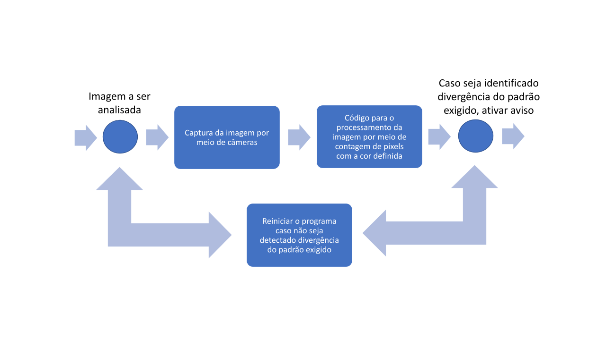

Nesta etapa é mostrado a modelagem do funcionamento do sistema através de fluxograma e é apresentada uma explicação dos blocos que compõe
Abaixo é apresentado o fluxograma do funcionamento do modelo proposto.
Imagem a ser analisada, tanto imagens carregadas de um banco de dados ou capturadas por câmeras em tempo real
Captura da imagem por câmera, o programa permite a captura de imagens em tempo real para ser processados pelo código desenvolvidas
Código para processamento da imagem, que faz a contagem dos pixels presentes na imagem de uma determinada cor definida pelo usuário.
Os pixels das imagens processadas são comparadas, caso haja divergência entre os valores esperados, ativa um sinal de aviso